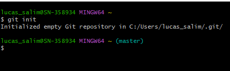
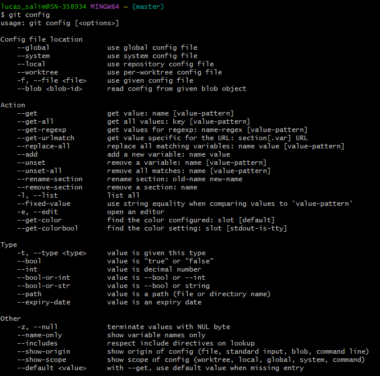

Este comando pode ser utilizado para criar um novo repositório do Git ou para transformar um diretório em um repositório do Git.
Permite ver e atribuir variáveis de configuração do git, geralmente utilizado quando você precisa iniciar a configuração do GIT ou para consultar quais são suas configurações atuais.
